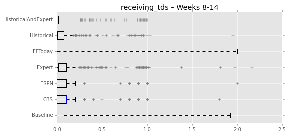
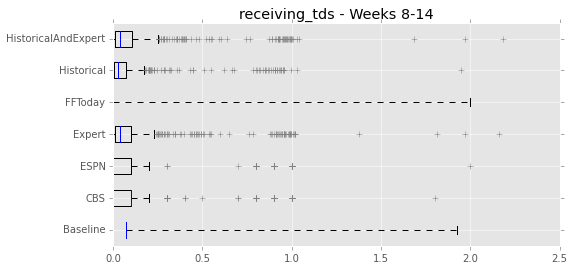
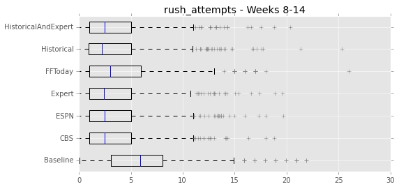
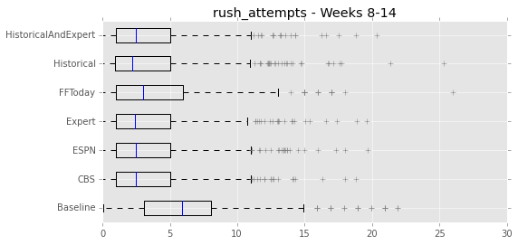

Result Analysis
RMSE Table
This table analyzes the size of errors (root mean squared error) of various predictions (rows) for various statistics (columns) for weeks 8 through 14 of the 2015 season. Lower errors mean better predictions.
The CBS, FF Today, and ESPN predictions are the predictions generated by various fantasy football websites. The Historical prediction is our prediciton based only on historical statistics, the Expert prediction is our prediction based on a combination of expert predictions, and the Historical and Expert is a combination of both. Finally, the Baseline prediction is just guessing the mean for the statistic in the test sample.
Our historical predictions do pretty well. The most important measures here for fantasy football scoring are rush yards, reception yards, rush touchdowns, and reception touchdowns. The historical model came in 2nd, 1st, 1st, and 1st respectively.
Our expert models did not fare particularly well. This is most likely because we have historical statistics from 2009 onwards, but only the 2015 season for expert data. As a result, the model built from expert predictions probably lacks sufficient statistical power. As they say, more data > better models.
Error Box Plots
These box plots also examine the distribution of errors from each prediction. Once again, the historical model comes out look pretty good.

 

 
